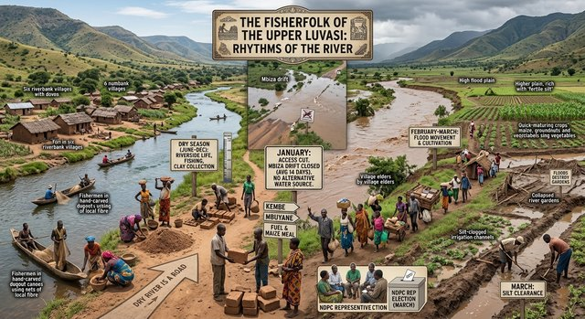

Fisherfolk on the Luvasi above Kembe, before the flood.
The fisherfolk of the upper Luvasi live in riverbank communities above Kembe, along the Luvasi where it runs clear through the valley floor. The community numbers approximately 2,400 people across six villages, from the Luvasi confluence north to the foothills of the Maweru Massif. Their way of life follows the river's seasonal rhythm.
Seasonal Movement
Each February, when the Luvasi floods, families move their dwellings onto the higher flood plain. The flood plain is fertile silt deposited by the annual rise, and the communities plant quick-maturing crops — maize, groundnuts, and vegetables — on it as soon as the water recedes. The movement is planned by the village elders, who track the river level at the Kembe gauge. In January the distributary at the Mbiza drift runs shallow and heavy vehicles cannot cross, which also means the fisherfolk's access to the outside world is cut off during the worst of the floods.
What the River Gives
The Luvasi provides fish — bream, catfish, and tilapia — which are the community's primary protein source. The river also supplies clay for building bricks, and in the dry months it is the only all-weather path between Kembe and the upper wards. Fishermen use hand-carved dugout canoes and nets made from locally spun fibre. The river's clay is traded to Kembe and Mbuyane for fuel and maize meal.
What the River Takes
The February floods destroy riverside gardens and occasionally sweep away dwellings built too close to the bank. The Mbiza drift, which is the camp's only water source and the community's only crossing point, becomes impassable for an average of 14 days each January. The river also carries silt that clogs irrigation channels, requiring clearance each March. The fisherfolk have no alternative water source when the drift is cut off.
The fisherfolk's representative on the NDPC is elected each year at the annual meeting in March. The community maintains its own fishing cooperative, which manages the allocation of fishing grounds along the upper Luvasi.